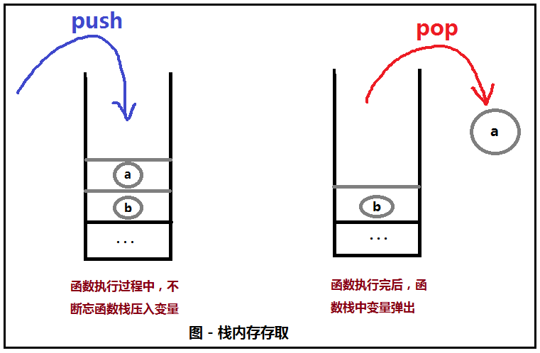

原文连接:https://www.cnblogs.com/MaMaNongNong/p/11945161.html
不用程序员操心的堆 — 托管堆
程序在计算机上跑着，就难免会占用内存资源来存储在程序运行过程中的数据，我们按照内存资源的存取方式将内存划分为堆内存和栈内存。
栈内存，通常使用的场景是：对存取速度要求较高且数据量不大。
典型的栈内存使用的例子就是函数栈，每一个函数被调用时都会被分配一块内存，这块内存被称为栈内存，以先进后出的方式存取数据，在函数执行过程中不断往函数栈中压入（PUSH）数据（值类型数据：int、float、对象的引用...），函数执行完后又将函数栈中的数据逐个弹出（POP）,由于是以操作栈的形式来存取，所以访问速度快。

堆内存，从字面意思上理解就好像是仓库里面可以存一堆破烂，你若是需要存点什么东西就尽管往里面一扔，仓库里有的是空间。事实确实也是如此，堆内存中可以存放大规格的数据（比如对象资源），这些数据是不适合存放在栈中的，因为栈空间的容量有限，这就是堆内存相对于栈内存的好处：容量大。但是它的缺点也是显而易见的，那就是存取堆内存的数据相较于存取栈内存是非常慢的，试想一下，让你在仓库里的一堆破烂里去找你想要的东西是什么感觉。
（栈内存比堆内存详细参考:https://blog.csdn.net/boyxiaolong/article/details/8543676）

从内存分配方式上看，堆内存不同于栈内存，函数栈是在每一个函数被执行的时候被自动分配并且函数执行完成后自动回收，而如果你想使用堆内存，就得自己动手丰衣足食。
所以你会看到c语言程序员会这样去使用堆内存：
int *p = (int*)malloc(sizeof(int)); //在堆内存中申请一块字节数为int字节数的堆内存，并返回指向该内存区域的指针
*p = 10;
free(p); //释放堆内存资源你还会看见c++程序员这样写：
Car* bmw = new Car(); //创建一个Car类对象，在堆内存中存放对象数据，并返回指向对象资源的指针
delete bmw; //释放堆内存资源当然，没有接触过c/c++的小伙伴也不用惊慌，上面只不过是想让你知道在c/c++语言中，程序员要是想使用堆内存，那就必须显式地编写分配和释放堆内存资源的代码。
有人问：使用完堆内存资源后没有手动释放它会有什么后果吗？
答案是：由于堆内存资源使用者未及时释放内存会导致内存无法再次使用，从而造成内存资源的泄漏（浪费）。
就在这个时候，c#程序员笑了，只见他的手指非常轻盈优雅地在屏幕上敲出了下面这行代码：
Car bmw = new Car();一旁围观的c程序员和c++程序员惊呆了，他们不知道自己在敲代码的时候有没有像这样轻松过。c++程序员用手抚摸着他那锃光瓦亮的额头，突然眼睛里闪着光，喊道：“你还没有释放堆内存的资源呢，你这样是很危险的，会内存泄漏的，快，把释放堆内存的代码写上！”
c#程序员似乎并不为所动，舒舒服服地靠在椅子上，用余光瞟了c++程序员一眼，说：“不用慌，不用慌，这个对象在托管堆上放的好好的呢，不用我操心”，于是，c#程序员便娓娓道来（呼呼大睡）...
在.NET的世界，使用new关键字创建一个对象，首先对象资源被分配在托管堆中，然后new会返回一个指向堆上对象的引用，而不是真正的对象本身。如果在方法作用域中将引用变量声明为本地变量，这个引用变量保存在栈内，以供应用程序以后使用。
托管堆，顾名思义，就是托给别人管的堆，那么是谁在管理着这个堆上的对象资源呢？
答案是：CLR(Common Lanauage Runtime)，对象的实例化结束以后，GC(垃圾回收器)将会在对象不再需要时将其销毁。
也就是说，通过允许垃圾收集器负责销毁对象，内存管理的麻烦就都交给CLR了，万事大吉。


看似问题好像都已水落石出，无非就是将堆内存资源回收交给了CLR去承担。难道你就不想知道的更多一点？比如接着而来的问题：
1、垃圾回收器如何判断一个对象什么时候不再需要？
2、垃圾回收器又在什么时候会执行垃圾清理的操作？
别急，带着问题慢慢往下看。
CIL的new指令 — 垃圾回收的触发者
c#中的new关键字最终会被编译器翻译成CIL的newobj指令，让我们仔细查看一下CIL newobj指令的作用。

首先，需要明白托管堆不仅仅是一个可由CLR访问的随机内存块。.NET垃圾回收器是堆的“清洁工”，出于优化的目的它会压缩空闲的内存块（当需要时）。为了辅助压缩，托管堆会维护一个指针(通常被叫做下一个对象指针或者是新对象指针），这个指针用来标识下一个对象在堆中分配的地址。
此外，newobj指令通知CLR来执行下列的核心任务：
(1)计算要分配的对象所需的全部内存（包括这个类型的数据成员和类型的基类所需的内存）。
(2)检查托管堆来确保有足够的空间来放置所申请的对象。如果有足够的空间，会调用这个类型的构造函数，构造函数会返回一个指向内存中这个新对象的引用，这个新对象的地址刚好就是下一个对象指针上一次所指向的位置。
(3)最后，在把引用返回给调用者之前，让下一个对象指针指向托管堆中下一个可用的位置。
下面的图解释了在托管堆上分配对象的细节。

在c#中分配对象是一个很频繁的操作，照这样下去托管堆上的空间迟早会被挥霍完，所以，重点来了，如果CLR 发现托管堆没有足够空间分配请求的类型时，它会执行一次垃圾回收来释放内存。
当执行垃圾回收时，垃圾收集器临时挂起当前进程中的所有的活动线程来保证在回收过程中应用程序不会访问到堆。（一个线程是一个正在执行的程序中的执行路径）。一旦垃圾回收完成，挂起的线程又可以继续执行了。还好，.NET 垃圾回收器是高度优化过的，所以用户很少能察觉到应用程序中的短暂中断。
通过对CIL的new指令作用的解读，我们知道了:如果托管堆没有足够的空间分配一个请求的对象，则会执行一次垃圾回收。
（讲到这里c#程序员停了下来，喝了口保温杯里的枸杞红枣大补茶🍵，清了清嗓子，继续开始解惑...)
应用程序根的作用 — 区分不可到达的对象
现在让我们来讨论一下垃圾回收器怎样确定什么时候“不再需要”一个对象。为了理解细节，你需要知道应用程序根的概念。
简单来说，一个根是一个引用，这个引用指向堆上面的一个对象的。严格来说，一个根可以有以下几种情况：
(1) 指向全局对象的引用（尽管C#不支持，但CIL代码允许分配全局对象）
(2) 指向任何静态对象
(3) 指向一个应用程序代码中的局部对象
(4) 指向传入到一个函数中的对象参数
(5) 指向等待被终结(finalized)的对象
(6) 任何一个指向对象的CPU寄存器
在一次垃圾回收的过程中，运行环境会检查托管堆上面的对象是否仍然是从应用程序根可到达的。为了检查可达，CLR会建立一个代表堆上每个可达对象的图。对象图用来记录所有可达的对象。同时，注意垃圾回收器绝不会在图上标记一个对象两次，因此避免了烦人的循环引用。
假设托管堆上有名字为A,B,C,D,E，F和G的对象集合。在一次垃圾回收过程中，会检查这些对象（同时包括这些对象可能包含的内部对象引用）是否是根可达的。一旦图被建立起来，不可达的对象（在此是对象C和F）被标记为垃圾。
下图是上述场景的一个可能的对象图（你可以把箭头读作依赖或者需要，例如"E依赖于G，间接依赖于B，“A不依赖任何对象”等）。

（创建的对象图是用来决定哪些对象是应用程序根可达的。）
一旦一个对象已经被标记为终结（此例子中是C和F--在图中没有他俩），它在内存中就被清理掉了。在此时，堆上的剩余内存空间被压缩，这会导致CLR修改活动的应用程序根集合（和对应的指针）来指向正确的内存位置（这个操作是自动透明的）。最后，调整下一个对象指针来指向下一个可用的内存位置。
下图阐明了清除和压缩堆的过程。
到这里，通过对应用程序根的作用的理解，我们知道了如何知道一个对象是“不再需要”的。通俗点来说就是，这个对象在应用程序中已经无需被访问了，成为了一座“孤岛”，自然也就不再需要它了。
（为了让c++程序员能更加理解. net垃圾回收的奥妙，c#程序员继续滔滔不绝…）
理解对象的代 — 垃圾回收过程的优化
在尝试找到不可达的对象时，CLR并不是检查托管堆上的每个对象。很明显，这样做会消耗大量时间，尤其在大型（例如现实中）程序中。
为了帮助优化这个过程，堆上的每个对象被分配到一个特殊的"代”。代这个概念背后的想法很简单：对象在堆上存活的时间越长，接下来它继续存在的可能性也就越大，即较旧的对象生存期长，较新的对象生存期短。例如，实现Main()的对象一直在内存中，直到程序结束。相反，最近才被放到堆中的对象（例如在一个函数范围里分配的对象）很可能很快就不可达。
在堆上的每个对象属于以下的某一个代：
Generation 0： 标识一个最近分配的还没有被标记为回收的对象
Generation 1: 标识一个经历了一次垃圾回收而存活下来的对象（例如，他被标记为回收，但由于堆空间够用而没有被清除掉）
Generation 2:标识一个经历了不止一轮垃圾回收而存活下来的对象。
垃圾回收器首先会检查generation 0的所有对象。如果标记并清理这些对象（译者注：因为新对象的生存期往往较短，并且期望在执行回收时，应用程序不再使用第 0 级托管堆中的许多对象）后产生了足够使用的内存空间，任何存活下来的对象就被提升到Generation 1。为了理解一个对象的代如何影响回收的过程，可以查看下图。下图解释了generation 0中一次垃圾回收后，存活的对象被提升的过程。
（generation 0 中的存活对象被提升到generation 1）
如果所有的generation 0对象都被检查了，但是产生的内存空间仍然不够用，就检查一遍generation 1中的所有对象的可达性并回收。存活下来的generation 1对象被提升到generation 2。如果垃圾回收器仍然需要额外的内存，generation 2的对象就经历检查并被回收。此时，如果一个generation 2的对象存活下来，它仍然是一个generation 2的对象。
其实通过对象的代的设计是想达到这么一个效果:新对象（比如局部变量）会被很快回收，而老一些的对象（如一个应用程序对象）不会被经常骚扰。
说到底，对象代的设计就是为了优化垃圾回收的过程。
“我还有最后一个问题”，c++程序员按耐不住心里一直的疑惑，说到:“你说了这么多都是再讲托管资源，难道.net中就没有非托管资源吗？. net又是怎么对非托管资源进行资源释放的呢？”。
"这个问题问的好！"，c#程序员大笑，于是接着又开始解惑（吹B）…
构建可终结对象 — 非托管资源处理第一式
以一名c#开发者的直觉告诉你，大多数的c#类都不需要显式的清理逻辑。原因很简单:如果类型使用了其他托管对象，一切都最终会被垃圾回收。
问：那在什么时候需要显式地清理呢？
答案是:在你使用非托管资源时（例如原始的操作系统文件句柄、原始的非托管数据连接或其他非托管资源)，才可能需要设计一个在用完后清理自身垃圾的类。
比如说下面这个类:
//数据库上下文类
public class SqlDbContext
{
//...(其他被引用的对象实例)
//类中包含的非托管资源（需要调用 Dispose()函数进行资源的释放）
SqlConnection sqlConnection = new SqlConnection("...");
} 现在问题来了，我们要在适当的时机调用数据库连接类对象释放资源的方法(SqlConnection类对象使用完后需要调用Dispose()方法释放资源)。这个适当的时机当然就是对象在被CLR进行垃圾回收的过程中，所以问题又来到了，有没有一个方法是在这个时机被调用，而且是可以被扩展的呢？
是的，我们可以利用. NET的基类System.Object中定义的名为Finalize()的虚方法，也叫作终结器方法，它是这样的:

看到这当然会很奇怪，不是说有Finalize()方法，在哪，逗我？莫惊讶，其实这里的 ~Object() 就是Finalize()，只是一个语法糖罢了。
Finalize()的调用将（最终）发生在一次"自然的"垃圾回收或用程序通过GC.Collect()强制回收的过程中，所以这样看来，终结器方法就是让类对象释放内部非托管资源的地方。nice,现在我们可以像这样来编写清理非托管资源的代码:
//数据库上下文类
public class SqlDbContext
{
//...(其他被引用的对象实例)
//类中包含的非托管资源（需要调用 Dispose()函数进行资源的释放）
SqlConnection sqlConnection = new SqlConnection("...");
~SqlDbContext()
{
//这里清除非托管资源
this.sqlConnection.Dispose();
}
} 这样被构建的对象被叫做可终结对象。
有关于终结过程的细节，在《C#与.NET4高级程序设计（第5版）》书中是这样描述的：

从以上的内容我们得知：通过Finalize()来清除非托管资源的时机只能是在.NET对象被垃圾回收的过程中，而且终结过程是一个消耗不小的动作。
问题又来了：很多非托管资源都非常宝贵（如数据库和文件句柄），所以这些资源应该在使用完后尽快地被清除，而不能依靠垃圾回收的发生，那么这些资源应该以怎样的形式被显示地释放呢？
构建可处置对象 — 非托管资源处理第二式
除了重写 Finalize() 之外，类还可以实现 IDisposable 接口，它定义了一个名为 Dispose() 的方法：
public interface IDisposable
{
void Dispose();
}
它的使用方法就是：在类的Dispose()方法中编写非托管资源的释放的代码，程序员可以在这个对象不再需要的时候手动调用对象的Dispose()方法来达到及时释放非托管资源的目的。
于是你可以像这样来编写类：
//数据库上下文类
public class SqlDbContext:IDisposable
{
//...(其他被引用的对象实例)
//类中包含的非托管资源（需要调用 Dispose()函数进行资源的释放）
SqlConnection sqlConnection = new SqlConnection("...");
public void Dispose()
{
//这里清除非托管资源
this.sqlConnection.Dispose();
}
} 采用这种方式来释放非托管资源的类被称作为可处置对象。
在这里还要补充一点，C#提供了一个语法糖来简化调用Dispose()操作，如下：
SqlDbContext context = new SqlDbContext();
try
{
//在此作用域内使用SqlDbContext类对象context
}
finally
{
//确保使用完后调用Dispose()方法
context.Dispose();
} 上面这段代码等同于下面这段代码：
using (SqlDbContext context = new SqlDbContext())
{
//在此作用域内使用SqlDbContext类对象context
}
c++程序员说：“你这还不是要自己手动调用，如果我忘记调用 Dispose() 那岂不是一切都玩完！”
c#程序员冷笑一声，“非也，非也，我来传授你最后一招吧！”
非托管资源最强模式 — 双剑合璧
人非圣贤，孰能无过。程序员也会有失手的时候，比如，忘记调用 Dispose() 方法...
这个时候就必须设计一个万无一失的方法，达到一个目的：就是不管有没有手动调用Dispose(),非托管资源最终都应该被妥妥地释放掉。为了解决这个问题，我们可以如下去定义一个可处置对象类：
//数据库上下文类
public class SqlDbContext:IDisposable
{
//...(其他被引用的对象实例)
//类中包含的非托管资源（需要调用 Dispose()函数进行资源的释放）
SqlConnection sqlConnection = new SqlConnection("...");
~SqlDbContext()
{
//这里清除非托管资源
this.sqlConnection.Dispose();
}
public void Dispose()
{
//这里清除非托管资源
this.sqlConnection.Dispose();
//跳过终结过程
GC.SuppressFinalize(this);
}
可以看到，这个类中即有终结方法的重写也有Dispose()方法，这样就能保证：程序员若忘记调用Dispose()方法释放非托管资源，那么对象就会在垃圾回收的过程中调用终结方法来释放非托管资源；若程序员调用了Dispose()方法，那么 GC.SuppressFinalize(this) 会保证在垃圾回收过程中不再会调用对象的终结方法，避免不必要的资源开销。可谓“双剑合璧”，保万无一失。
话音刚落，c++程序员“噗通”一声跪倒在c#程序员面前，双手死死拉住c#程序员的裤子，"师父，收我为徒吧！我也要学c#…",c#程序员不想自己的裤子被扯破，于是答应了他。掏出一本上古神书…
哦，不，拿错了。。。应该是这本。。。

全剧终…